Date
DATE · Date input field picked from a calendar
What is a Date field?
- 1.1Adding a field and the property panel layout
1.1Adding a field and the property panel layout
Overview
Date (DATE) is an input box for picking a date from a calendar. Use it for items recorded by the day, such as visit date · diagnosis date · consent date. Users select from a calendar instead of typing, so values in the wrong format cannot get in. If you also need the time, use the Date-time type.
Screen guide
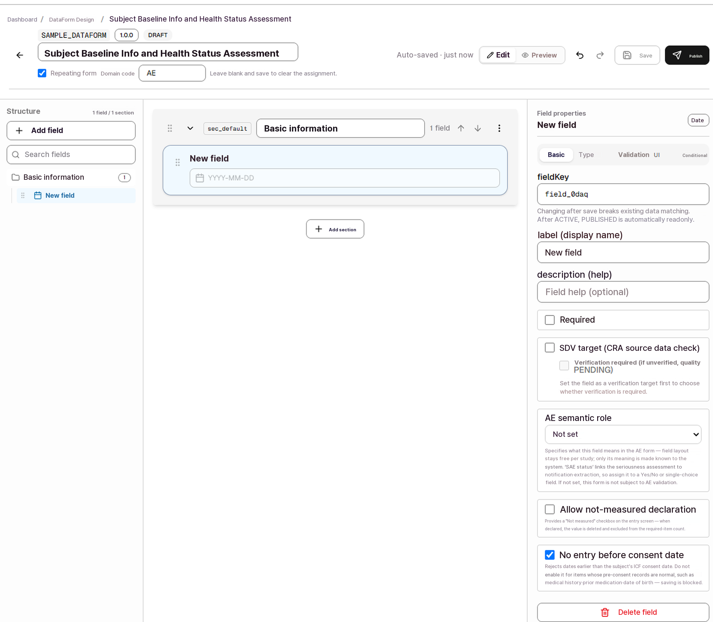
[+ Add field] — Specify the type here to create the field.
The new field is added to the structure tree. (It is shown with a calendar icon.)
An input box with a calendar icon appears on the WYSIWYG canvas, showing the YYYY-MM-DD hint.
fieldKey — The actual key under which the value is stored. 2.1
label (display name) · description (help) — The name and supporting description shown on screen. 2.1
Required · SDV target · AE semantic role · Allow not-measured declaration — Covered in 2.2–2.4.
No entry before consent date — An item that exists only in the Date type. Rejects dates earlier than the subject's consent date. 2.5
Type badge “Date” — The type of the selected field. It cannot be changed after the field is added.
5 property tabs — Basic · Type settings · Validation · UI · Conditional. Chapters 2–6 of this manual correspond to these tabs.
Precautions
Must check Data corruption · Form cannot be completed
- • The type cannot be changed after the field is added. If you chose the wrong type, delete the field and add it again. (Only sub-items of table-type fields and field groups are an exception and allow a type change.)
- • The structure cannot be changed after publishing (PUBLISH). If changes are needed during operation, publish a new version.
Easily misunderstood behavior
- • When you change a setting, “Changes detected — auto-save pending” appears at the top. To undo, press
Ctrl+Z.
Basic tab — name · required · verification target · not measured · consent date gate
- 2.1fieldKey · display name · help
- 2.2Required
- 2.3SDV target (CRA source data check)
- 2.4Allow not-measured declaration
- 2.5No entry before consent date
2.1fieldKey · display name · help
Overview
This area sets the field's names. The storage key (fieldKey) and the name shown on screen (label) are different values, and the point up to which each may be changed differs.
Screen guide
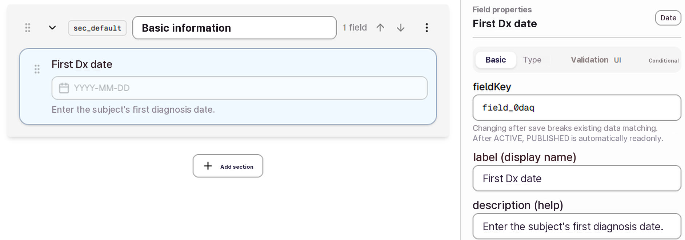
label (display name) — Enter the item name to show on the entry screen.
It is shown as the field title on the canvas.
description (help) — Enter a supporting description to show below the display name. If left blank, nothing is shown.
It is shown in gray text below the input box.
fieldKey — The actual key under which the value is stored. When you add a field it is assigned automatically, like field_0daq, and can be changed using letters, digits and underscores. It is not shown on screen — be sure to read the precautions below.
Precautions
Must check Data corruption · Form cannot be completed
- • ⛔ Do not change the fieldKey after saving. As the on-screen notice says, “Changing after save breaks existing data matching” — values already entered are no longer linked to the new key and are effectively lost.
- • For date items, state in the help “what the date is based on”. Depending on whether “Diagnosis date” means the first diagnosis or the diagnosis of the current condition, and whether “Visit date” means the day of the visit or the day of the test, each person recording will enter a different date.
- • Once the form becomes PUBLISHED after ACTIVE, the fieldKey input becomes read-only automatically. The system prevents changes only from that point on, so until then users must take care themselves.
Easily misunderstood behavior
- • The display name can be changed safely at any time, because it is on-screen text, not the storage key.
2.2Required
Overview
Sets whether this item must be entered. When selected, saving is blocked on the entry screen if no date has been picked.
Screen guide
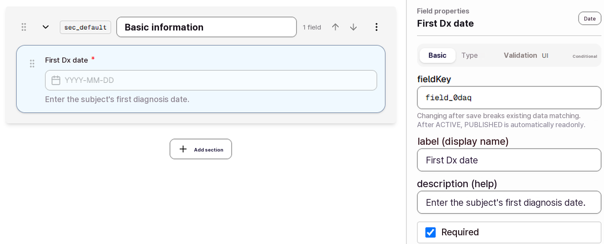
Required — When selected, this field becomes required.
A red asterisk (*) appears to the right of the display name on the canvas, telling users that the field is required.
Precautions
Must check Data corruption · Form cannot be completed
- • For items where the date may be unknown, decide how to handle it before making them required. Some items, such as the onset date in medical history, have dates that cannot be confirmed exactly. In such cases it is safer to allow the not-measured declaration 2.4 or to ask only the relevant subjects using conditional display Ch. 6.
- • Fields hidden by conditional display are exempt from required validation. Ch. 6 Hiding in the UI tab, by contrast, does not exclude them, so do not confuse the two. 5.3
Easily misunderstood behavior
- • If the not-measured declaration is allowed and the user declares it, the field is excluded from the required-item count. 2.4
Note
- • The required setting is used for the form completion check. If no date is picked, the value is treated as empty.
2.3SDV target (CRA source data check)
Overview
SDV (Source Data Verification) is the procedure in which the clinical research associate (CRA) checks entered values against the site's source data. Here you decide whether this field is a target of that procedure. This setting is the same for all field types, so the screen is also the same regardless of type.
Screen guide


SDV target (CRA source data check) — When selected, this field is included in the CRA's check list.
When it becomes selected, the sub-item is enabled.
Verification required (if unverified, quality PENDING) — Can be set only after ① is selected. When selected, the quality status of the data stays at PENDING until the CRA finishes the check.
Before ① is selected, ② is grayed out and disabled. As the on-screen notice says, “Set the field as a verification target first to choose whether verification is required.”
Precautions
Must check Data corruption · Form cannot be completed
- • Changing a value clears its verification. If you edit the date of a field that is already VERIFIED, the quality status returns to PENDING and the CRA must check it again.
Easily misunderstood behavior
- • Dates are good candidates for SDV. Items whose dates remain as is in the source data, such as consent date · visit date · dosing date, are clear to check, and a single wrong date changes both the visit window assessment and the exposure period calculation.
- • SDV cannot be performed by the person who entered the data. The system enforces cross-verification (Cross-User SoD), so the person entering and the person verifying must be different.
Note
- • The quality status progresses in the order PENDING → VERIFIED → CLEAN. If even one field marked verification required is unverified, the data cannot become CLEAN.
2.4Allow not-measured declaration
Overview
This feature records, as a value, the case where the date cannot be confirmed. If left blank, “not entered yet” cannot be distinguished from “checked, but the date is unknown”. This declaration tells the two apart.
Screen guide

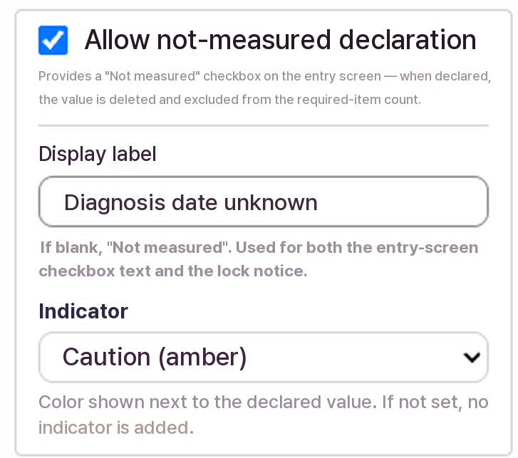
Allow not-measured declaration — When selected, a “Not measured” checkbox is created on the entry screen and the two items below appear.
Display label — If left blank, the default “Not measured” is used.
If you change it to Diagnosis date unknown, this text is applied to both the entry-screen checkbox and the lock notice.
Indicator — The default is None.
If you change it to Caution (amber), a mark in that color appears next to the declared value.
Precautions
Must check Data corruption · Form cannot be completed
- • ⛔ Do not fill in an unknown date with an arbitrary date. If you enter “January 1” or “today” instead, it cannot be distinguished from real records and cannot be filtered out in analysis. That is why this declaration exists.
- • Declaring deletes the value. As the on-screen notice says — “When declared, the value is deleted and excluded from the required-item count.”
Easily misunderstood behavior
- • This feature is especially useful for date items. Some dates, such as the onset date in medical history, are genuinely not remembered even by the subject. Write a display label that makes the situation clear, like
Diagnosis date unknownin the capture.
Note
- • If no indicator is set, no color mark is applied. If emphasis is needed, select Caution (amber) or another option.
2.5No entry before consent date
Overview
An item that exists only in the Date type. When turned on, the system rejects dates earlier than the subject's ICF consent date. It is a safeguard that prevents records that can only occur after consent (study-related tests · dosing · visits) from being entered with a pre-consent date.
Screen guide
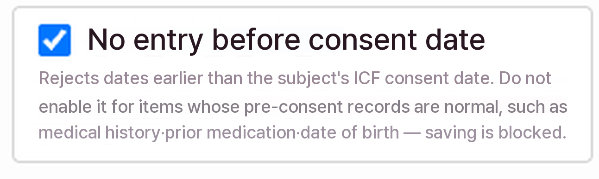
No entry before consent date — When selected, dates earlier than the consent date cannot be saved in this field.
On-screen notice — “Rejects dates earlier than the subject's ICF consent date. Do not enable it for items whose pre-consent records are normal, such as medical history · prior medication · date of birth — saving is blocked.”
Precautions
Must check Data corruption · Form cannot be completed
- • ⛔ Do not turn this on for medical history · prior medication · date of birth. For these items pre-consent dates are normal, and if it is on, valid records cannot be saved. The on-screen notice warns about this directly.
- • ⛔ Turning it on during operation blocks existing data. If values are already saved with dates before the consent date, saving that data again is blocked. Decide carefully before turning it on after publishing.
Easily misunderstood behavior
- • The reference date is each subject's ICF consent date. It is taken from the subject information, not from the form, so for subjects without a registered consent date there is nothing to compare against.
- • This gate works at the time of saving. Picking an earlier date in the calendar is not itself blocked; it is rejected when saving — inform users in advance with helpText. 5.4
Items to turn on · items to turn off
| Kind of item | Examples | This setting |
|---|---|---|
| Records that occur only after consent | Study drug dosing date · visit date · study-related test date | On |
| Items where pre-consent records are normal | Date of birth · onset date in medical history · prior medication dosing date | Off |
| The consent date itself | ICF consent date | Off (it would be compared with itself) |
Type settings tab — display format and date range
- 3.1Type settings tab layout
- 3.2Display format · allowed input range (format · min · max)
- 3.3Default value (defaultValue)
3.1Overall layout
Overview
This tab sets in what format the date is displayed and up to which period it is accepted. It has no length · regular expression as in the text type; three items are actually used in this type.
Screen guide
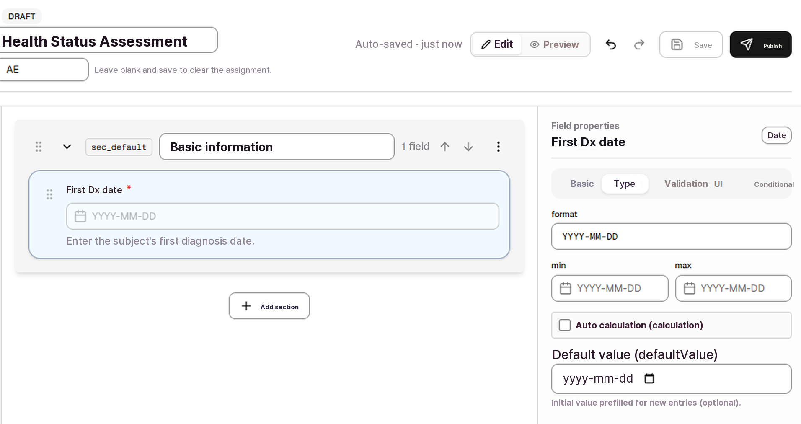
format — The format in which the date is displayed on screen. 3.2
min · max — The earliest and latest dates that can be entered. 3.2
Auto calculation (calculation) — The item is shown, but it is not used for dates. It calculates numbers from other field values, so use it with the Number type.
Default value (defaultValue) — A date prefilled for new entries. 3.3
Precautions
Must check Data corruption · Form cannot be completed
- • min · max are the “blocking” axis. Dates outside the range are not saved. However, the range is not shown on the canvas, so users only learn why they were blocked at the saving stage — inform them in advance with helpText. 5.4
- • No entry before consent date 2.5 and min are different mechanisms. min is a fixed date set when designing the form, while the consent date gate is based on each subject's own consent date. If both are on, a date is saved only if it satisfies both.
Easily misunderstood behavior
- • The faint
YYYY-MM-DDin the input box is an input example, not a set value. If min · max are left blank, no date range limit applies.
Note
- • The layout of this tab is fixed by the type selected when the field was created. If the type differs, the items in this tab also differ.
3.2Display format · allowed input range (format · min · max)
Overview
Sets in what order the date is displayed and up to which period it is accepted. The two settings are different in nature — format is how it looks, and min · max decide whether it can be saved.
Screen guide
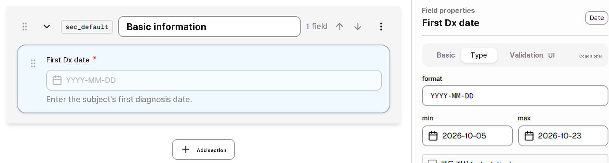
format — The date display format. Select either YYYY-MM-DD (year-month-day) or DD-MM-YYYY (day-month-year). The capture shows YYYY-MM-DD.
min — The earliest date that can be entered. Dates before it are not saved.
max — The latest date that can be entered. Dates after it are not saved.
Precautions
Must check Data corruption · Form cannot be completed
- • ⛔ Do not mix formats within one project. If some forms use year-month-day and others day-month-year, users seeing
06-10-2026cannot tell whether it means June 10 or October 6. Use a single format across the whole project. - • min · max are not shown on the canvas. Unlike the Number type, which shows the range on both sides of the input box, for dates the range cannot be seen on screen and is enforced only at the saving stage. 3.1
Easily misunderstood behavior
- • format is only a display method and does not change the stored value. Exported data contains dates stored in the system's standard format — changing format leaves existing data as is.
- • Relative conditions such as “no dates after today” cannot be set here. min · max are fixed dates set when designing the form. If you need to block future dates, set an upper limit with a value range rule in the Validation tab and explain the reason in message. 4.3
Note
- • Setting only one side is fine — to set only an upper limit, enter only max.
Available formats
| format | Example | Where to use |
|---|---|---|
YYYY-MM-DD | 2026-10-06 | International standard (ISO) notation · recommended |
DD-MM-YYYY | 06-10-2026 | When European conventions must be followed |
3.3Default value (defaultValue)
Overview
A date prefilled when a new entry starts. Pick a date from the calendar or type it in. For this type the result cannot be checked on the edit screen, so you must switch to [Preview].
Screen guide
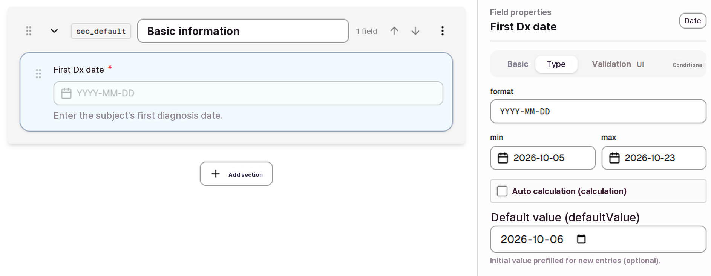
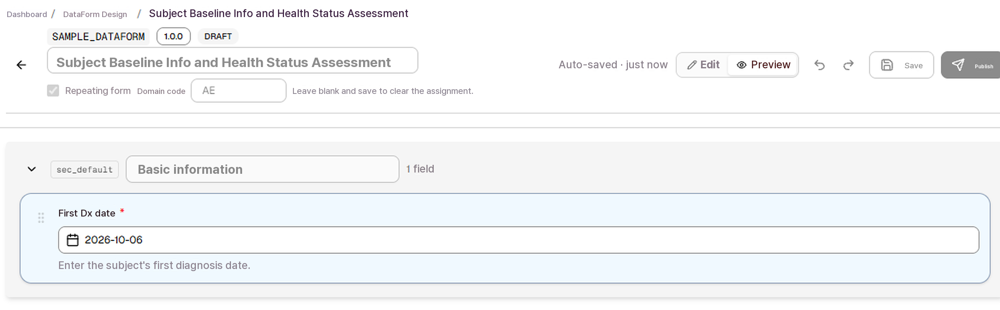
Default value (defaultValue) — Specify the date to prefill for new entries. (Optional)
The edit screen canvas still shows only the YYYY-MM-DD hint. This is not because the setting failed, but because the edit screen does not draw the default value.
[Preview] — Switch to Preview at the top.
The default value 2026-10-06 is in the input box. Check here whether it is actually applied.
Precautions
Must check Data corruption · Form cannot be completed
- • ⛔ Do not set a default value for measurement date items. If dates that must differ per subject, such as visit date · test date, contain a default value, unchecked dates are saved as is. Dates look plausible, so wrong values are hard to notice.
- • The default value must also satisfy the min · max range 3.2 and the consent date gate 2.5. A default value outside the range is blocked at the saving stage.
Easily misunderstood behavior
- • Do not conclude that the setting failed just by looking at the edit screen. For the Date type, the default value does not appear on the edit screen canvas — always check with [Preview].
- • The default value applies only to newly created entries. Data already saved is not changed.
Validation tab — checking values before saving
- 4.1No validation rules
- 4.2Adding a rule
- 4.3Completed rule
4.1No validation rules
Overview
This tab collects rules that check whether a date meets conditions before it is saved. Use it instead of min · max in Type settings Ch. 3 when you want to define the message shown on violation yourself.
Screen guide
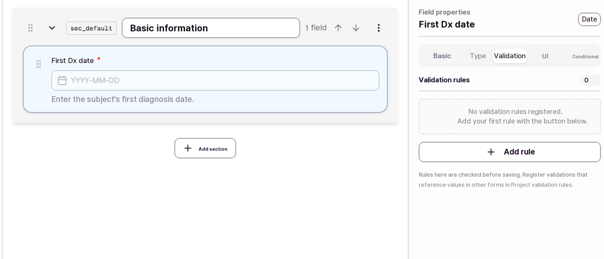
[+ Add rule] — Creates the first rule. The screen after selecting it is explained in 4.2.
The Validation rules area and the number of registered rules. Initially it is 0 items.
When there are no rules, the notice “No validation rules registered. Add your first rule with the button below.” is shown.
Notice at the bottom — “Rules here are checked before saving. Register validations that reference values in other forms in Project validation rules.”
Precautions
Must check Data corruption · Form cannot be completed
- • ⛔ Comparisons between dates, such as “whether the visit date is after the consent date”, cannot be created here. Register validations that reference values in other forms on the “Project validation rules” screen. This tab covers only checks completed within the same form.
Easily misunderstood behavior
- • In many cases min · max in Type settings are enough. There is no need to apply the same range check in two places. 3.2
- • You can create multiple rules, and a value is saved only if it satisfies all active rules.
4.2Adding a rule
Overview
Selecting [+ Add rule] in 4.1 creates a Rule 1 block. The rule type used in Date fields is Value range — the same rule as for numbers, but the min · max boxes appear as date pickers.
Screen guide
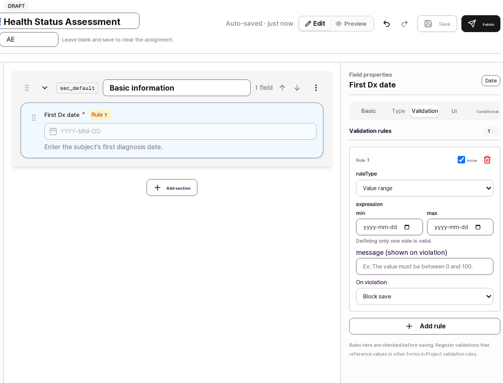
[+ Add rule] — Creates one more rule. (It is the same button you selected in 4.1.)
The “Rule 1” block is created, and a “Rule 1” badge appears next to the display name on the canvas.
The number of rules changes to 1 item.
Active checkbox and Delete icon — You can pause a rule without deleting it.
ruleType — The type of rule. For dates, use Value range.
min — The start date of the range. Pick it from the calendar.
max — The end date of the range.
The faint yyyy-mm-dd and “Ex: The value must be between 0 and 100.” are input examples, not set values. As the on-screen notice says, “Defining only one side is valid.”
message (shown on violation) — The message shown to users when the rule is violated.
On violation — Select either Block save or Warning.
Precautions
Must check Data corruption · Form cannot be completed
- • If message is left blank, users cannot tell why saving was blocked. Be sure to enter it.
- • This rule applies together with the range limit in Type settings 3.2, so if you specify conflicting ranges, no date can be saved.
Easily misunderstood behavior
- • The example text in message is shown for numbers (
The value must be between 0 and 100). It is only an example, so enter a message suited to dates yourself. 4.3 - • The practical standard is Block save for impossible dates and Warning for rare but possible dates.
4.3Completed rule
Overview
This is the state after filling in all the empty items from 4.2. With this setting, picking a date outside October 2026 blocks saving and shows the specified message.
Screen guide
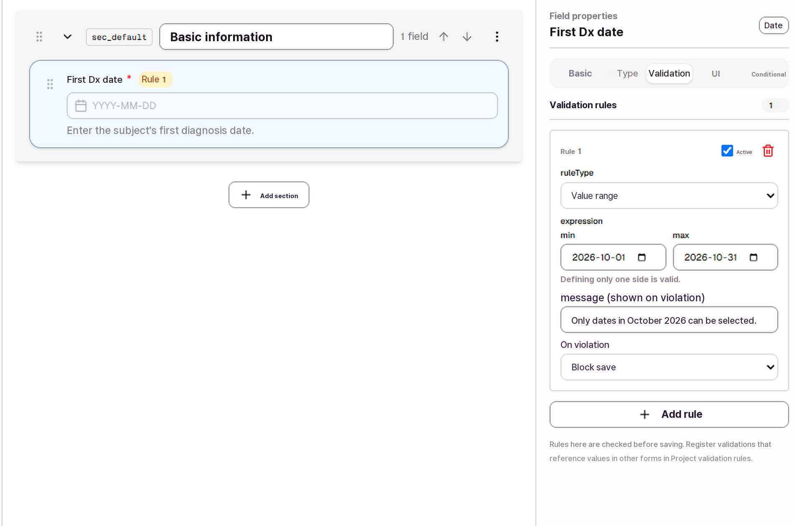
ruleType = Value range — A rule that checks the earliest and latest boundaries of the date.
min = 2026-10-01 — The start date of the range.
max = 2026-10-31 — The end date of the range.
On-screen notice — “Defining only one side is valid.” The rule works correctly even if only one side is specified.
message = Only dates in October 2026 can be selected. — The allowed range is stated as is so that users know what to correct.
On violation = Block save — The value is not saved until the condition is met.
Precautions
Must check Data corruption · Form cannot be completed
- • State the allowed range as is in message. Writing “Only dates in October 2026”, as in the capture, tells users right away where to pick in the calendar. For dates the range is not shown on screen, so this message is the only guidance. 3.2
- • Make the message match the actual settings. If only one side is set but the message states a range on both sides, users stop trusting the rule.
Easily misunderstood behavior
- • Even after the rule is saved, clearing the Active checkbox stops it from applying immediately — use this to pause a rule without deleting it. 4.2 ②
- • Type settings Ch. 3 · validation rules Ch. 4 · the consent date gate 2.5 all apply together. If any one of the three is not met, the value is not saved.
UI tab — screen layout and guidance text
- 5.1UI tab layout
- 5.2Layout width
- 5.3Read-only · hidden
- 5.4placeholder · helpText
5.1Overall layout
Overview
This tab sets how the field is laid out and explained on screen, not the value itself. Settings in this tab do not change the stored data itself. However, Hidden only hides the field on screen and does not exclude it from the required-item count, so check 5.3 before using it.
Screen guide
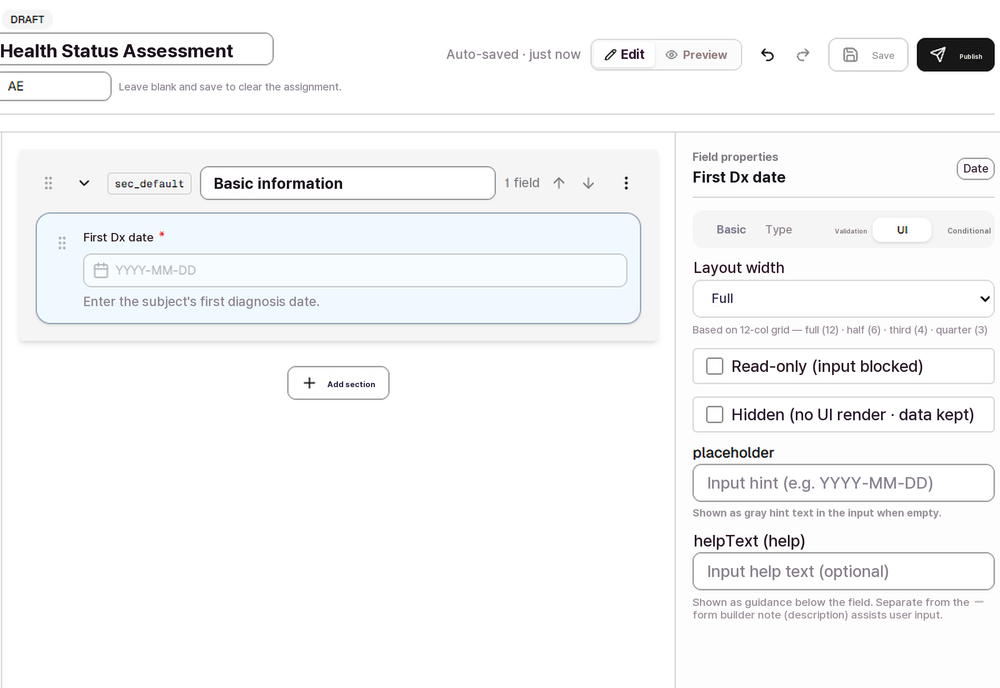
Layout width — The width this field takes up in a row. The meaning of the options is given in the notice right below: “Based on 12-col grid — full (12) · half (6) · third (4) · quarter (3)”. 5.2
Read-only (input blocked) — Shows the field but prevents editing. 5.3
Hidden (no UI render · data kept) — Hides the field from the screen. 5.3
placeholder — Gray hint shown inside the input box when there is no value. 5.4
helpText (help) — Guidance text shown below the field. 5.4
Precautions
Must check Data corruption · Form cannot be completed
- • Guidance text is especially important for dates. The range limit 3.2 · consent date gate 2.5 · validation rules Ch. 4 are all invisible on screen and work only when saving, so unless helpText tells users in advance which dates are allowed, they are blocked without knowing why. 5.4
Easily misunderstood behavior
- • The faint
Input hint (e.g. YYYY-MM-DD)·Input help text (optional)in the input boxes are input examples, not set values. - • Date items stay easy to use even at a narrower width. Their values are short and fully visible in narrow boxes, so placing paired items such as start date · end date side by side at half width makes the form shorter. 5.2
Note
- • By default, Layout width = Full, and Read-only · Hidden are cleared.
5.2Layout width
Overview
Select the width this field takes up on the 12-column grid, which divides a row into 12 columns. Dates have short values and do not become hard to read when narrowed, so this is effective for placing related dates side by side to make the form shorter.
Screen guide
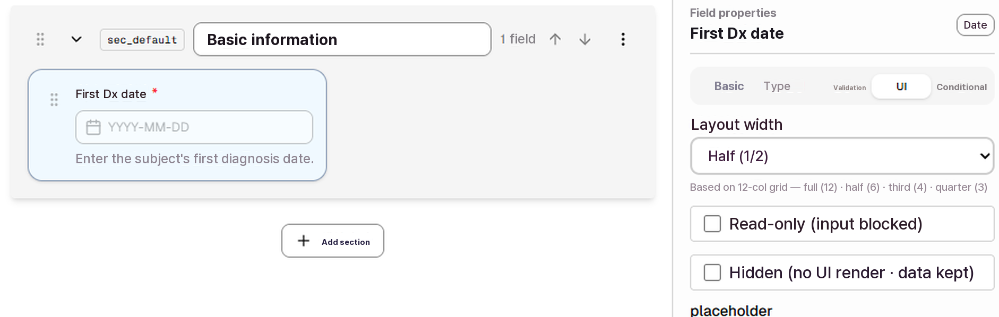
Layout width — Specify the width from the selection list. The example is Half (1/2).
The canvas input box shrinks to half width. The calendar icon stays as is.
Precautions
Easily misunderstood behavior
- • When you reduce the width, the next field is placed on the same row. If the total in a row exceeds 12, the field moves to the next row.
- • It is better to place the start date and end date side by side. Users enter the two dates while seeing them together, which reduces mistakes where they are swapped.
Note
- • If the field is too narrow, the calendar icon and the date run together and become hard to read. Use Quarter (1/4) only when there are several dates.
- • On devices with a narrow screen, fields may be stacked one per row regardless of this setting.
Width options
| Option | Columns used | Fields per row | Good for |
|---|---|---|---|
| Full | 12 | 1 | Single date |
| Half (1/2) | 6 | 2 | Start date · end date |
| Third (1/3) | 4 | 3 | Consent date · enrollment date · first dosing date |
| Quarter (1/4) | 3 | 4 | Group of dates (calendar icon gets cramped) |
5.3Read-only · hidden
Overview
Makes the field non-editable or not displayed. In both cases the stored date is preserved as is.
Screen guide
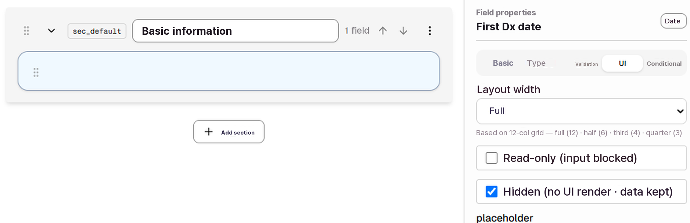
Read-only (input blocked) — The date is shown, but users cannot change it. (Cleared in this capture)
Hidden (no UI render · data kept) — The field is not shown on the entry screen. Values already saved are not deleted.
The field disappears from the canvas, and the section looks empty.
Precautions
Must check Data corruption · Form cannot be completed
- • ⛔ Do not hide required items. Hiding in the UI tab only hides the field on screen and does not exclude it from the required-item count — an item users cannot fill in stays in the count, and the form can no longer be completed.
- • Hiding does not delete data. The field only disappears from the screen; to delete the value, you must delete the field.
Easily misunderstood behavior
- • This differs from hiding in the Conditional tab. Fields hidden because the condition is not met are excluded from the required-item count Ch. 6. Both use the word “hidden”, but they are handled in exactly opposite ways in validation, so tell them apart.
- • Read-only and Hidden are different. Read-only means “shown but not editable”; Hidden means “not shown”. If users need to see a date filled in by the system (such as the enrollment date), use Read-only.
Note
- • Even when hidden, the field remains in the Structure panel — you can select it again and revert the setting.
5.4placeholder · helpText
Overview
Two kinds of text that tell users which date to pick. They differ in where they appear and when they disappear. For the Date type, this text is the only way to prevent blocking in advance.
Screen guide
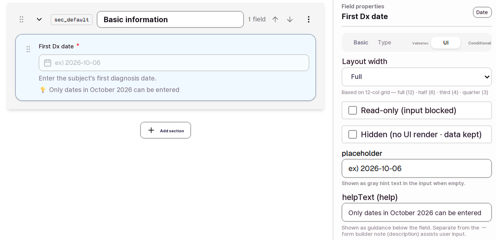
placeholder — Enter the hint text to show inside the input box. The capture uses ex) 2026-10-06 to show the expected display format as an example.
It is shown in gray inside the input box. It disappears when the user picks a date.
helpText (help) — Enter the guidance text to show below the field. The capture uses Only dates in October 2026 can be entered to state the allowed range.
It is shown below the field with a light bulb icon (💡). It does not disappear even after a date is picked.
Precautions
Must check Data corruption · Form cannot be completed
- • If there are limits, be sure to state them in helpText. The date range 3.2 · no entry before consent date 2.5 · validation rules Ch. 4 are all invisible on screen and work only when saving. Unless users are told in advance, they are blocked only after picking a date.
- • For items with the consent date gate turned on, state that fact. Ex: “Only dates after the consent date can be entered.” 2.5
Easily misunderstood behavior
- • description and helpText are different items. As the on-screen notice says, helpText is “Separate from the form builder note (description) — assists user input”. If both are entered, both lines are shown.
Roles of the three texts
| Item | Where shown | What to write for dates | Where set |
|---|---|---|---|
| placeholder | Inside the input box (gray) | Example of the display format | UI tab |
| helpText | Below the field (💡) | Allowed range · consent date limit | UI tab |
| description | Below the display name | Which date is being asked | Basic tab 2.1 |
Conditional tab — showing a field based on another value
- 6.1Enabling conditional display
- 6.2Setting the condition
6.1Enabling conditional display
Overview
This feature shows or hides this field depending on the value of another field. Use it for branching, such as asking for the diagnosis date only when “Prior diagnosis history = Yes” — subjects to whom it does not apply are not shown a date box they cannot fill in.
Screen guide
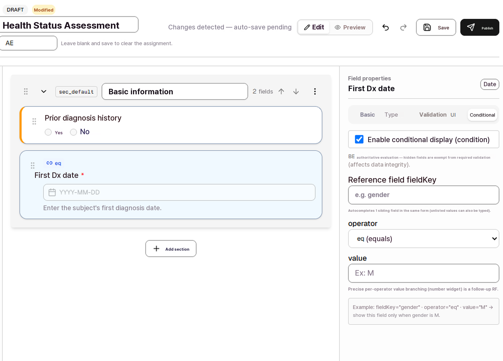
Enable conditional display (condition) — When selected, the condition settings below appear.
A 🔗 eq badge appears above the field on the canvas to show that a condition is applied.
⚠ On-screen notice — “Hidden fields are exempt from required validation (affects data integrity).” The condition is evaluated by the system.
Reference field fieldKey — Another field in the same form on which the condition is based. Sibling fields in the same form are autocompleted, and you can also type a value not in the list.
operator — The comparison method. The default is eq (equals).
value — The value to compare with.
Example at the bottom — fieldKey="gender" · operator="eq" · value="M" → show this field only when gender is M.
Precautions
Must check Data corruption · Form cannot be completed
- • Setting a condition can exempt a field from required validation. While a field is hidden because the condition is not met, the form is completed with that field empty even if it is required. This is intended behavior, not a defect.
- • If the condition becomes false while a date has already been entered, that value disappears from the screen. Take care when later changing the field the branch is based on.
Easily misunderstood behavior
- • This is the typical use of “asking for a date only from those it applies to”. Asking for the onset date only from subjects with a history prevents those without one from leaving the box blank or entering an arbitrary date. 2.2 · 2.4
Note
- • If you enable the condition and leave the reference field blank, the condition is never met. Be sure to fill in all of ②–④. 6.2
6.2Setting the condition
Overview
This is the state after the condition enabled in 6.1 has been fully entered. With this setting, this Date field is shown on the entry screen only when the value of the “Prior diagnosis history” field is 1 (Yes).
Screen guide
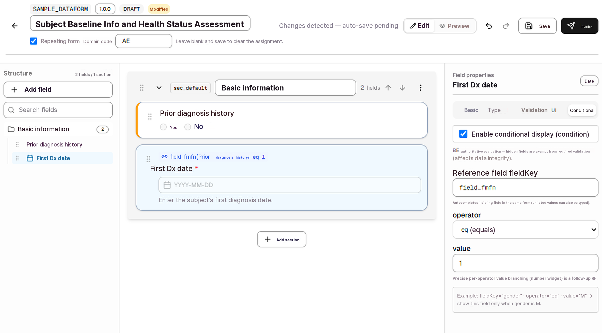
Prior diagnosis history is 1Reference field fieldKey = field_fmfn — Points to the “Prior diagnosis history” field in the same form.
operator = eq (equals)
value = 1 — Enter the value stored for that option, not the “Yes” shown on screen.
Result of entering all of ①–③ — the canvas badge becomes specific: 🔗 field_fmfn(Prior diagnosis history) eq 1.
The referenced “Prior diagnosis history” field must be in the same form; you can check it in the structure tree.
Example at the bottom — fieldKey="gender" · operator="eq" · value="M" → show this field only when gender is M.
Precautions
Must check Data corruption · Form cannot be completed
- • ⛔ In value, enter the stored value, not the on-screen text. In the capture the referenced field appears as Yes / No, but the actual stored value is
1. If you enter “Yes”, the condition is never met and this field is never shown. - • Changing or deleting the fieldKey of the reference field breaks the condition. Conditions are linked by fieldKey, not by display name. 2.1
Easily misunderstood behavior
- • Take care when using a date field as the basis of a condition.
eqis met only for exactly the same date — to branch on “after · before”, check the operator.
Note
- • Using conditions makes forms shorter and reduces unnecessary input. However, conflicting conditions create fields that are never shown, so always check in Preview after setting them.
Appendix
- 7.1Settings at a glance
7.1Date field settings at a glance
Settings by tab
| Tab | Item | What it sets | Section |
|---|---|---|---|
| Basic | fieldKey | The actual key under which the value is stored (do not change after saving) | 2.1 |
| label (display name) | Item name shown on screen | 2.1 | |
| description (help) | Supporting description below the display name — what the date is based on | 2.1 | |
| Required | Whether it must be entered (plan for unknown dates first) | 2.2 | |
| SDV target | Whether it is a CRA source data check target · whether verification is required | 2.3 | |
| AE semantic role | What this field means in the AE form | ※ | |
| Allow not-measured declaration | Whether “date unknown” can be recorded as a value · display label · indicator | 2.4 | |
| No entry before consent date | Date type only — rejects dates earlier than the subject's ICF consent date | 2.5 | |
| Type settings | format | Display format — YYYY-MM-DD or DD-MM-YYYY | 3.2 |
| min · max | Allowed date range (not shown on the canvas) | 3.2 | |
| Default value (defaultValue) | Date to prefill — visible only in Preview | 3.3 | |
| Auto calculation | Not used in this type | 3.1 | |
| Validation | ruleType | Rule type — Value range is used for dates | 4.2 |
| expression (min · max) | Start · end date (picked from the calendar · specifying only one side is allowed) | 4.3 | |
| message | Message shown on violation — state the allowed range as is | 4.3 | |
| On violation · Active | Block save / Warning · rule active · inactive | 4.2 | |
| UI | Layout width | Width on the 12-col grid (half each for start date · end date) | 5.2 |
| Read-only | Shown but not editable | 5.3 | |
| Hidden | Not shown on screen (stored value kept · still counted as required) | 5.3 | |
| placeholder · helpText | Input guidance — put the allowed range · consent date limit in helpText | 5.4 | |
| Conditional | Condition active | Whether conditional display is used (exempt from required validation) | 6.1 |
| Reference field fieldKey | Field in the same form on which the condition is based | 6.2 | |
| operator · value | Comparison method and value to compare (enter the stored value) | 6.2 |
Must remember
Must check Data corruption · Form cannot be completed
- • Do not turn on no entry before consent date for medical history · prior medication · date of birth. Pre-consent dates are normal for these items, so saving is blocked. 2.5
- • None of the limits are visible on screen. The range · consent date gate · validation rules work only when saving, so inform users in advance with helpText. 5.4
- • Do not mix formats within a project.
06-10-2026can be confused between June 10 and October 6. 3.2 - • Do not fill in an unknown date with an arbitrary date. It cannot be distinguished from real records — use the not-measured declaration. 2.4
- • Do not set a default value for measurement dates. Unchecked dates are saved looking plausible. 3.3
Easily misunderstood behavior
- • The default value does not appear on the edit screen. It is not that the setting failed — it can be checked only in [Preview]. 3.3
- • min and the consent date gate are different mechanisms. min is a fixed date; the gate is based on each subject's consent date. 3.1
Note
- • Editing a date clears the SDV verification, and the quality status returns to PENDING. 2.3
Not covered in this document
※ AE semantic role — It is on the Basic tab, but there is no capture of the setup process, so it has no separate section. Set it only in projects that use the adverse event (AE) form; for details, refer to the AE documentation.
Auto calculation (calculation) — The item is shown on the Type settings tab but is not used in this type. It calculates numbers from other field values, so use it with the Number type. 3.1
Validation rule types other than Value range — The only type actually used in Date fields is Value range, so other types are not covered. Validations that compare with other dates (e.g. whether the end date is after the start date) are registered not in this tab but on the “Project validation rules” screen. 4.1